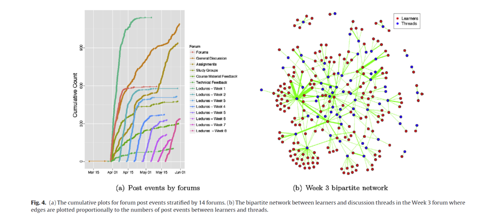

Moocs等在线学习形态的发展，使得学习泛在化、联通化，成为社会学习形态。社会行为、社会网络对社会学习的影响是什么？
作者：Duy Vua, Philippa Pattisonb, Garry Robins类型：文章年份：Social Networks 43 (2015) 121–135
导语：
本文应用社会网络分析以及相关事件分析模型，研究了MOOCs学员社会背景、社会行为以及社会网络关联对社会学习的影响，试图回答以下三个问题：
1、能否依据学员的社会行为预测课程的翘课率？
2、揭示学习者的社会关联的社会以及时间演化模式。
3、研究社会关联和相互影响与学习效果之间的关系。
这些问题的研究，对于揭示在信息网络基础上的学习形态性质非常重要，并可以在此基础上，为更好的设计和改进社会学习平台技术和机制提供理论依据。
摘要：
We propose three extensions for the relational event framework to model the co-evolution of multiplenetwork event streams which are increasingly available thanks to the explosive growth of online appli-cations. Firstly, a flexible stratification approach is considered to allow for more complex data structureswith many types of nodes and events. Secondly, an inference method that combines nested case–controlsampling with stratification is discussed to scale the approach to very large data sets. Finally, a suiteof new temporal and network statistics is introduced to reflect the potentially complex dependenciesamong events and observed heterogeneities on nodes and edges.The empirical value of new extensions is demonstrated through an analysis of social learning in MassiveOpen Online Courses (MOOCs). In particular, three modeling problems are considered from the networkperspective: (1) the utility of social factors, performance indicators, and clickstream behaviors in the pre-diction of course dropout, (2) the social and temporal structure of learner interactions across discussionthreads, and (3) the forms of mutual dependence of social learning interactions on prior learning success,and future learning success on forms of prior social learning interaction.
